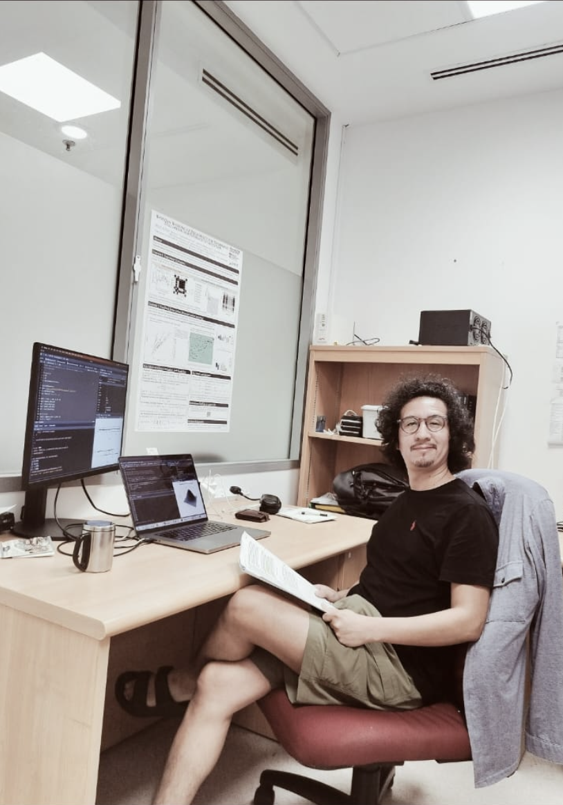

Miguel R. Pebes-Trujillo
Email: mpebes@ntu.edu.sg
Office: Nanyang Technological University (NTU),
Research Techno Plaza (RTP), X-Frontiers Block, Level 6,
50 Nanyang Ave, Singapore 639798.
Curriculum Vitae
I am a Research Fellow in Artificial Intelligence and Data Science in the School of Materials Science and Engineering at
NTU, Singapore, working in Kee Woei Ng's group. I received my Ph.D. in Statistical Science (2023) from Indiana University
Bloomington (IU), co-advised by Daniel Manrique-Vallier
and Andrew Womack.
At IU, I also Ph.D.-minored in Complex Networks and Systems, and was a Visiting Assistant
Professor at the Department of Statistics (2022-2023). I received my M.S. in Statistics and B.S. in Computer Science from
the Pontifical Catholic University of Peru.
|
|
 |
My research integrates probabilistic modeling and computational inference for understanding, prediction, and control of real-world systems.
This focus mainly involves learning causes from effects (i.e. solving inverse problems), and steering actions to achieve system goals
(i.e. optimal control), anchored in an understanding of hierarchy and ranking structures.
Under this framework, I've worked in domains such as telecommunications, risk and fraud detection, mobility patterns,
change-point detection, network inference, and -currently- remote sensing, spectral analysis, and precision agriculture.
Technical core: Bayesian inference, Markov Chain Monte Carlo (MCMC) algorithms, and their diachronic applications in Machine Learning -namely, Bayesian Adaptive Learning.
Last update: July 24, 2025.
Miguel R. Pebes-Trujillo © 2025. All rights reserved.